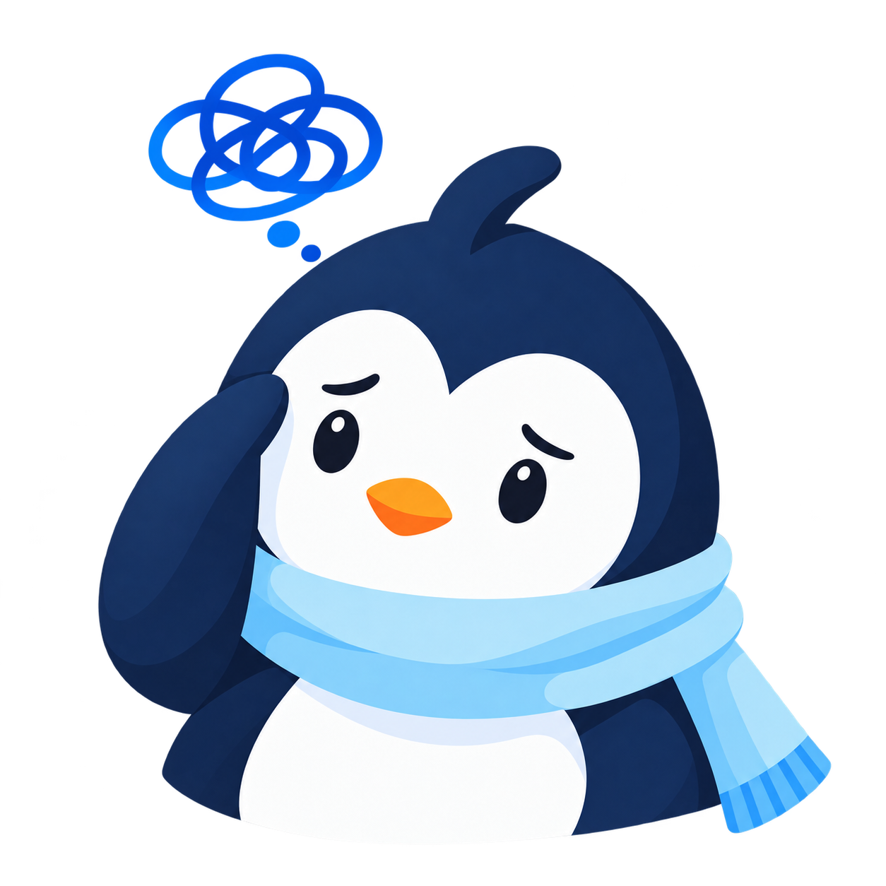

Four new illustration candidates. Review the meaning and size before adding tags to the app. These examples use invented writing.

One optional activity tag per entry. A feeling stays separate, so Study does not automatically mean Overloaded.
I want to ask for a fairer share of the group project.
I found a calmer way to ask about the deadline.
I want to explain why I felt left out.
OverloadedChosen or confirmed by the person
Use the tangled thought cloud instead of a generic cheerful face. Keep the label visible and changeable.
This concept groups dates above cards to avoid two competing badges. The current app still uses date tiles; that layout choice needs review.